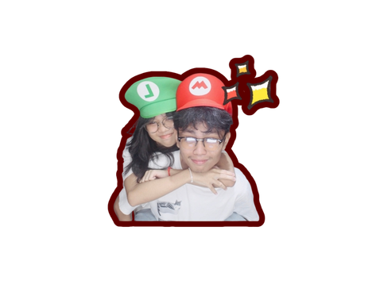
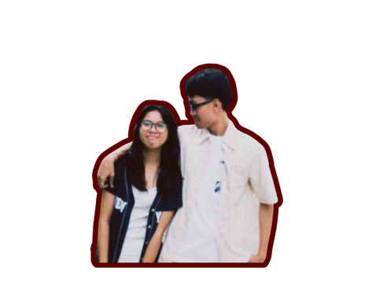
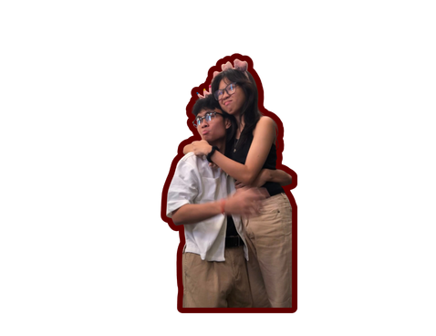
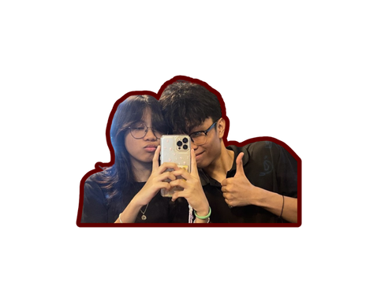
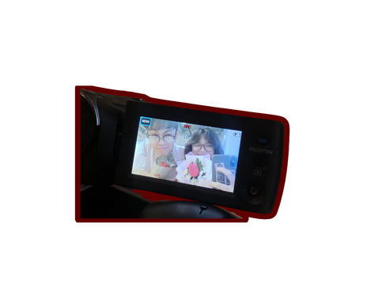
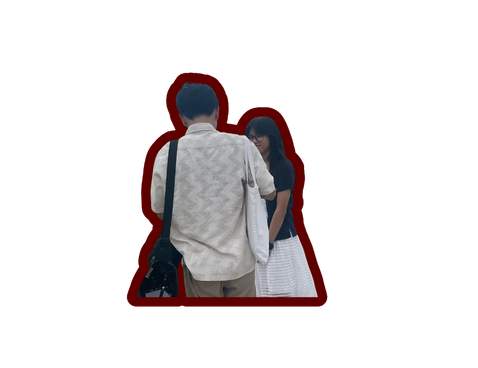
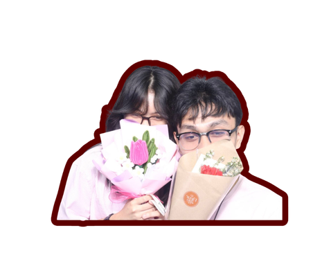
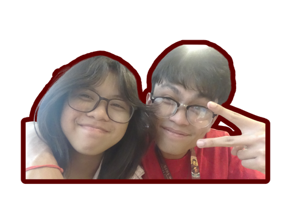
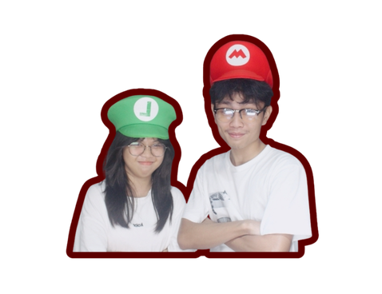
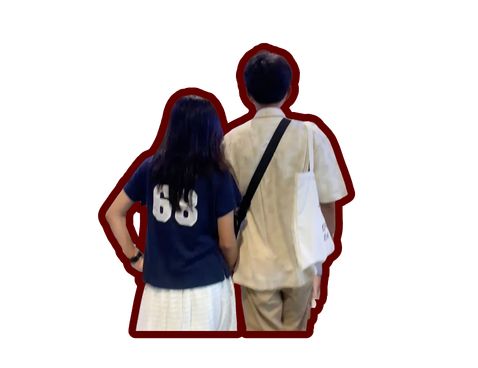
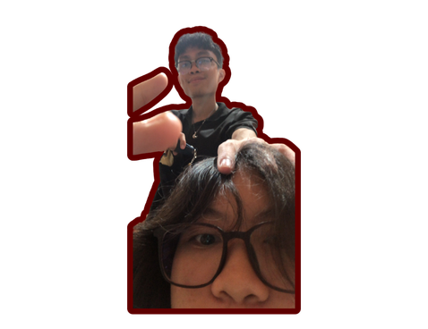
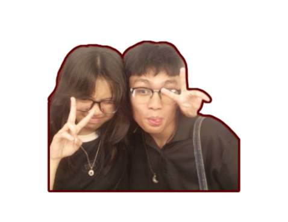
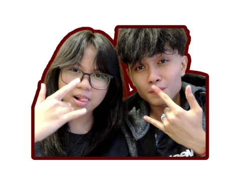
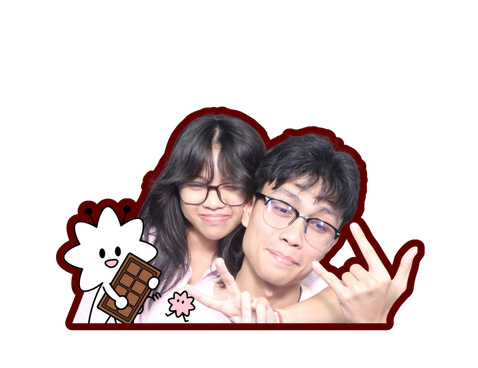
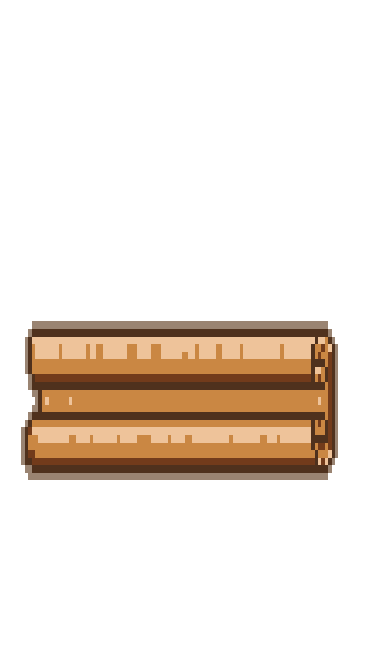
Dear Miggy,
First of all, wow.
Like actually wow.
We did it.
After all these years, after all the times we stopped talking, found our way back to each other, liked each other at the wrong time, tried again, got separated again, and somehow still ended up together, we're finally celebrating our first anniversary.
And honestly, I'm so proud of us.
Not just because we made it to one year, but because of everything it took for us to get here.
When people ask about our story, I always think it's funny because our story didn't start a year ago.
It started years and years ago when we were still kids.
I still remember seeing you back when I was attending my tutor. At first, you were just that boy I would always see around. Sometimes I'd catch a glimpse of you, but I never really thought much about it. Then one of my friends introduced us and we became friends.
After my tutor sessions, we'd play together with our friends. Looking back now, it's funny because apparently everyone knew you had a crush on me except me. Our friends would always tease us whenever we were together, and I was completely clueless.
One of my favorite memories from when we were kids was during Simbang Gabi.
I don't even know if you remember it as much as I do, but I definitely still do.
We were both chosen for the alay of the candles, and neither of us even knew that the other was there. We didn't know we were in the same place until we suddenly saw each other. It was such a simple moment, but somehow it stayed with me all these years.
Looking back now, it feels so us.
Even back then, somehow our paths kept crossing without us planning it.
Then the pandemic happened.
Everything changed.
My parents decided to transfer me to another school because they wanted a change. Honestly, I thought that would probably be the end of our friendship.
But somehow life said, "Not yet.
When Grade 6 started and online classes began, I found out that you were my classmate.
Out of all the people and all the schools, there you were again.
We started talking more because of school. We'd ask each other about assignments, activities, and everything related to class. Whenever we had free time, we'd play CODM together or Roblox whenever we could.
Back then, those moments felt normal.
Now they're some of my favorite memories.
Then graduation happened.
And once again, we lost contact.
You transferred schools.
I transferred schools.
We ended up going to completely different schools that were so far apart from each other.
The funny thing is we still lived in the same neighborhood.
You told me that you would still see me sometimes.
Meanwhile, I never noticed.
But to be fair, you already know how I am when I'm outside. Half the time I'm so lost in my own thoughts that I don't know who I pass by unless they call my name.
Then Grade 8 came.
And somehow, for the millionth time, we found each other again.
This time, things were different.
You confessed.
You started courting me.
For the first time, we explored the possibility of becoming something more than friends.
Unfortunately, things didn't go the way we wanted them to, and we ended up separating again.
Then late Grade 9 happened.
And somehow...
There you were again.
The feelings were still there.
After everything, they never really disappeared.
So we tried again.
You courted me for ten months.
Ten whole months.
But even then, things still didn't work out the way we thought they would.
And once again, we lost contact completely.
At that point, anyone would've probably thought that was the end of our story.
Honestly, maybe we should've thought that too.
But apparently life had other plans.
Five months later, I reached out because I wanted closure.
I didn't want years of friendship to disappear just because things didn't work out romantically.
I cared about you too much for that.
So we talked.
We agreed to stay friends.
And honestly, that might've been one of the best decisions we ever made.
Because around that time, we both had crushes on other people.
And somehow, both of us got rejected.
Imagine that.
So we became each other's rant buddies.
We'd complain about our failed crushes, talk about life, and tell each other everything.
But somewhere between all those conversations, we started realizing something.
No matter how many times we stopped talking...
No matter how many times life separated us...
No matter how many years passed...
We always found our way back to each other.
Again.
And again.
And again.
At some point I started thinking maybe there was a reason for that.
Because seriously, what are the chances?
How many times can two people lose contact and still end up finding each other over and over again?
It felt like no matter what happened, life kept bringing us back together.
And maybe that's why I started believing that maybe we were meant to happen eventually.
Not because everything was easy.
But because despite everything, we kept choosing to come back.
And finally, on June 6, 2025, after all those years, all those missed chances, all those wrong timings, and all those what-ifs...
I finally said yes.
And we became official.
Honestly, looking back now, I think everything happened exactly when it was supposed to.
Maybe we needed all those years to grow.
Maybe we needed all those experiences.
Maybe we needed all those lessons.
Because now, one year later, here we are.
Still together.
Still laughing.
Still annoying each other.
Still supporting each other.
Still choosing each other.
And I'm so happy that it's you.
I'm also really proud of us because we managed to survive Grade 11 together.
Congratulations to both of us.
We completed one of the most stressful school years while still staying together and being there for each other.
I know there were a lot of times when I was busy.
A lot of times when we couldn't talk as much.
A lot of schedule conflicts.
A lot of days where we were both tired.
But somehow, we still made it work.
And I hope you know that even if I seem busy, you can always call me.
Even if it's around 7 PM.
Even if I have school stuff.
Even if I'm working on something.
You can call me on Discord and I'll answer whenever I can because hearing from you will never be a burden to me.
I also want to say sorry for something.
I know I'm not the clingiest girlfriend.
Especially when we're around Mama because you already know how she thinks.
And that's also why when we were in the jeep together, I wasn't really comfortable being super touchy.
It's not because I don't love you.
It's not because I'm embarrassed of you.
It's simply because PDA has never really been my thing.
I'm just naturally not a very clingy person.
I can be clingy sometimes.
You know that. But not all the time.
And I know there are moments where I probably seem less affectionate than other girlfriends.
For that, I'm sorry.
But I hope you know that my love for you has never depended on how clingy I am.
Because if there's one thing this story has proven, it's that I love you enough to keep finding my way back to you.
Every single time.
Thank you for being patient with me.
Thank you for understanding me.
Thank you for accepting me for who I am.
Thank you for staying.
Thank you for being my best friend long before you became my boyfriend.
Thank you for every conversation.
Every laugh. Every game. Every memory. Every late-night talk. Every reassurance. Every effort. Every second chance.
And thank you for proving that sometimes the right person isn't someone new.
Sometimes it's the person who's been there all along.
The person who keeps finding their way back.
The person who feels like home.
I don't know exactly what our future will look like.
But if there's one thing I've learned from our story, it's that no matter where life takes us, we've always somehow managed to find each other.
And this time, I hope we stay.
I love you so much.
Happy 1st Anniversary, beb
We made it.
And I can't wait to make even more memories with you.
P.S. If someone told our younger selves—the kids at tutor, the kids playing after class, the kids standing together during Simbang Gabi—that we'd be here celebrating our first anniversary years later, I don't think either of us would've believed them. But somehow, here we are. And I think that's my favorite thing about us.
❤️